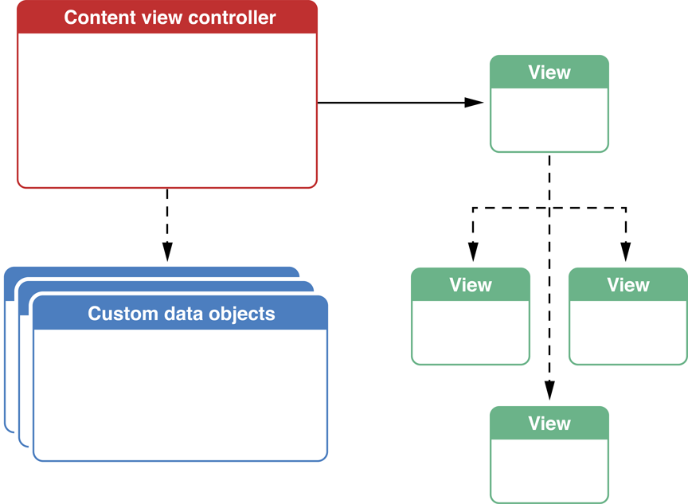
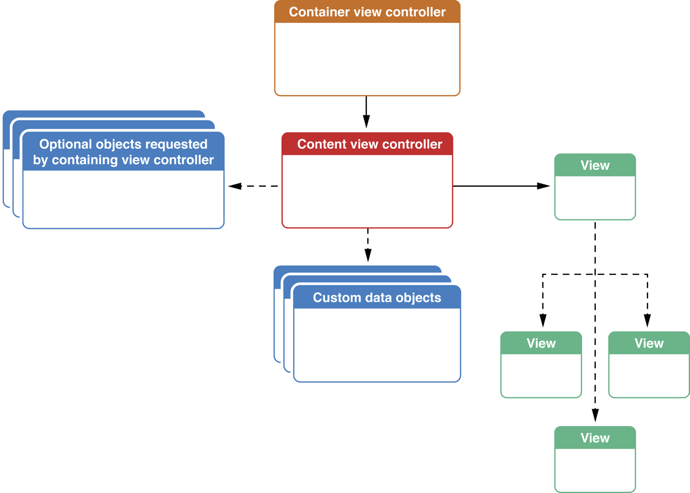

iOS 视图控制器编程指南：创建自定义内容视图控制器
记录关于学习过的 iOS 文档
创建自定义内容视图控制器
自定义视图控制器是应用程序的心脏，通过它们呈现应用程序的独特内容。所有应用程序至少需要有一个自定义内容视图控制器，复杂的应用程序将工作量划分为多个内容控制器。
视图控制器有许多职责。其中一些职责是 iOS 需要视图控制器完成，其它职责当你定义视图控制器在应用程序中的作用时由你分配给视图控制器。
内容视图控制器的剖析
UIViewController 类提供基本架构实现所有自定义视图控制器，通过定义 UIViewController 的自定义子类。子类提供了必要的代码填充视图与数据，和响应用户的动作。当你想调整视图控制器的默认行为时，可以重写 UIViewController 类的方法。视图控制器也可以与其它 UIKit 类交互实现你想要的行为。
图 3-1 展示一些与内容控制器直接关联的关键对象。这些对象实质上由视图控制器它自己拥有并管理。视图 (通过访问 view 属性) 是唯一必须提供的对象，尽管大多数视图控制器有额外的子视图附加这个视图中以及包含需要显示的数据的自定义对象。
图 3-1 剖析内容视图控制器

当你设计新视图控制器时，它可能有很多职责。一些职责对内，由它控制的视图和其它对象。其它职责对外与其它控制器合作。下面的章节列出许多视图控制器常见职责。
视图控制器管理资源
一些对象会在视图控制器初始化后实例化和在视图控制器释放后丢弃。其它对象，如视图，只有在视图控制器的内容显示在屏幕时才需要实例化。因此，视图控制器可以有效的利用资源并在内存不足时准备释放资源。正确的实现应用程序中视图控制器的这些行为可以使你的应用程序更高效的利用内存和其他资源，例如 CPU，GPU，和电池。
见 Resource Management in View Controllers。
视图控制器管理视图
视图控制器管理它们的视图和视图的子视图，但视图的框架－它在它的父视图中的位置和尺寸，由其它因素决定，包括设备的方向，状态栏是否显示，以及视图控制器的视图如何在窗口显示。你的视图控制器应该设计布局它的视图，以适应提供给它的框架。
视图控制器还管理着其它方面。视图控制器会接收到通知当它的视图从屏幕出现或消失时。视图控制器可以使用这些通知对这些操作执行必要的动作。
见 Resizing the View Controller’s，Supporting Multiple Interface Orientations，Responding to Display-Related Notifications。
视图控制器响应事件
视图控制器为它的视图和控件提供了中央协调对象。通常，将界面设计为当用户操作控件时控件把信息发送给它的控制器。视图控制器预处理这些消息，对保存在视图控制器中的视图和数据做任意需要的更改。
视图控制器也参与到响应者队列中，用作发出事件到应用程序中。你可以重写视图控制器类中的方法直接参与事件处理。视图控制器也是处理其它行为的适合对象，例如响应系统通知，定时器或应用程序的特定事件。
见 Using View COntrollers in the Responder Chain。
视图控制器协调其它控制器
尽管视图控制器可以创建和管理许多其它对象，但它通常不需要暴露公开这些对象进行检查或修改。它可以与其它对象合作 (通常是其它视图控制器)，但应该暴露少量必要的属性和方法允许与它的合作者通信。暴露过多视图控制器类中实现过程细节会使修改视图控制器的实现过程变得困难。依靠这些实现过程细节的合作者将需要被修改，以继续与视图控制器类工作。
见 Coordinating Efforts Between View Controllers。
视图控制器常与容器工作
如果你的视图控制器位于容器视图控制器内部，容器会强制附加约束，如图 3-2 的显示。容器要求你的视图控制器提供其它对象用作配置容器的界面。例如，内容视图控制器位于标签视图控制器内部，提供了标签栏项在作为标签显示。
图 3-2 容器视图控制器在它的子级强制添加要求

用作配置容器的属性由 UIKit 在 UIViewCOntroller 类中定义。关于容器的特定类型和配置它的属性的更多信息，见 View Controller Catalog for iOS 。
视图控制器可由其它视图控制器呈现
一些视图控制器设计为预计由其它视图控制器呈现。你可以直接呈现视图控制器，或使它成为容器视图控制器的子级并呈现容器。当呈现后，它会移到屏幕上，一直保留直到被清退。
这里有几个呈现视图控制器的原因：
- 即时对用户收集信息。
- 临时呈现一些内容。
- 临时更改工作模式。
- 为不同的设备方向显示备用界面。
- 以特定的动画过渡效果呈现新的视图层次结构 (或没过渡效果)。
这些原因大多数会为了收集和显示一些信息而临时中断应用程序的工作流程。在大部分案例中，被呈现的视图控制器都实现了委托。被呈现的视图控制器使用委托与呈现者视图控制器通信。当应用程序获取需要的信息后 (或用户阅读完成呈现的信息后)，被呈现的视图控制器通知呈现者控制器需要返回。然后呈现者控制器清退被呈现的视图控制器并使应用程序返回之前的状态。
见 Presenting View Controllers from Other View Controllers。
设计你的内容视图控制器
在你写视图控制器代码之前，你应该回答一些关于如何使用它基础问题。下面的问题设计来帮助你缩小视图控制器的焦点和帮助你明白它在应用程序中发挥的作用。特别是，它可以帮助你识别对其它控制器连接时－你的视图控制器需要执行的任务。
- 你是使用故事板实现视图控制器吗？
- 什么时候实例化？
- 它显示什么数据？
- 它执行什么任务？
- 它的视图如何显示在屏幕上？
- 它如何与其它视图控制器合作？
如果你仍在制定它的功能，这些问题可以不用的精确回答。尽管如此，它也可以帮助你产生视图控制器如何工作的灵感和如何与其它对象交互。
上面的问题没有询问你如何定义视图控制器的外观或如何执行你所分配的任务的精确实现过程。你需要回答这些重要问题，但没有这些东西也不会影响你的视图控制器公共接口。如果你想灵活的更改视图控制器的视觉设计，那么不要更改定义了如何与其它视图控制器合作的类声明。
使用故事板实现视图控制器
你可能会考虑到是否应该使用故事板作为实现过程细节，你所选择的方法会影响到如何实现视图控制器和如何与其它对象合作。通常建议你使用故事板至少有以下几个强力的理由：
当你的使用故事板：
- iOS 通常自动为你实例化视图控制器。
- 完成实例化后，你可以重写它的 awakeFromeNib 方法。
- 其它对象可以通过它的属性配置它。
- 可以在界面构造器中创建它的视图层次结构和其它相关对象。这些对象会在视图需要时自动加载。
- 在故事板中建立与其它视图控制器的关系。
如果你设计为使用编程方式创建视图控制器：
- 视图控制器通过 allocating 和 initializing 实例化。
- 需要你创建自定义初始化方法初始视图控制器。
- 其它对象配置它需要通过视图控制器的初始化并配置它的属性。
- 需要重写 loadView 方法以编程方式创建和配置它的视图层次结构。
- 通过代码创建与其它视图控制器的关系。
了解控制器的实例化时间
了解视图控制器何时实例化通常意味着明白应用程序其它的操作细节。例如，你可能知道你的视图控制器总是被同一个对象实例化。通常实例化视图控制器的对象是它们自己的视图控制器；使用故事板的应用程序几乎都是如此。在任意例子中，知道何时，为什么，和通过什么对象实例化视图控制器能让你洞察视图控制器和创建它的对象之间的信息交换。
了解控制器显示和返回什么数据
当你回答了这两个问题后，你就开始了解应用程序的数据模型和视图控制器之间是否需要交换数据。
下面是一些常用模式你应该可以在视图控制器中看到：
- 视图控制器从另一个控制器接收数据并显示它，没有提供编辑的方式。没有数据返回。
- 视图控制器允许用户输入新数据。用户完成数据的编辑后，它发送新的数据到另一个控制器。
- 视图控制器从其它控制器接收数据并允许用户编辑它。用户完成数据的编辑后，它发送新的数据到另一个控制器。
- 视图控制器不发送数据或接收数据，而是显示静态视图。
- 视图控制器不发送或接收数据，它自己实现数据加载不对其它控制器暴露机制。例如，GKAchievementViewController 类有内置功能判断玩家在设备上是否认证。它也知道如何从游戏中心加载玩家的数据。呈现的视图控制器不需要知道什么数据被加载或如何加载。
你不是受限于只能使用这些设计。
当数据出入视图控制器时，考虑使用一个数据模型类封装这些数据传输到新的控制器。例如，在 Your Second iOS App：Storyboards，主控制器使用 BirdSighting 对象发送与目标关联的数据到详细控制器。像这样使用对象可以轻松的更新数据添加额外的属性，不需要更改控制器类中方法签名。
了解控制器允许用户执行什么任务
一些视图控制器允许用户浏览，创建，或编辑数据。其它视图控制器允许用户导航到其它内容的场景。和一些允许用户执行视图控制器提供的任务。例如 MFMailComposeViewController 类允许用户撰写和发送邮件给其它用户。它负责处理发送邮件信息的低层细节。
由你来确定视图控制器执行哪些任务，并决定暴露多少视图控制器控制权给其它控制器。许多视图控制器可以直接执行任务不需要暴露配置数据给其它控制器。例如，GKAchievementViewController 类对用户显示成就信息，不需要暴露任何属性进行配置如何加载或呈现的数据。MFMailComposeViewController 类呈现略微不同的情景通过暴露一些属性给其它控制器用来配置它要显示的初始内容。之后，用户可以编辑内容并发送邮件消息不给其它控制器对象机会影响到处理。
了解控制器如何显示在屏幕上
一些视图控制器被设计为根视图控制器。其它的控制器等待被其它视图控制器呈现或位于容器控制器内。有时候，你设计的控制器可以以多种方式显示。例如，分割视图控制器的主视图在横屏模式中显示分割视图，在竖屏模式中显示在弹出窗口中。
明白视图控制器如何显示能让你洞察如何设置视图控制器在屏幕上的尺寸和位置。它也影响到其它区域，例如还决定你的视图控制器和什么控制器合作。
了解控制器如何与其他控制器合作
至此为止，你已经知道一些有关合作的事情。例如，如果你的视图控制器从 segue 实例化，那么它很有可能与配置它的源视图控制器合作。如果你的视图控制器是容器的子级，那么它与容器有合作关系。也有其它方向的关系，例如，视图控制器可能会延缓当前工作，并切换到另一个视图控制器。它也可以与已存在的视图控制器交换数据。
所有这些连接，视图控制器都会提供一个接口让其它控制器使用，或者它们熟悉其它控制器并使用该控制器的接口。这些连接对提供无缝体验是必不可少的，但它们也带来了设计上的挑战因为它们在应用程序的类之间引进了依赖。依赖是一个很大的问题因为它们使单独更改一个类，隔离组成应用程序的其它类的影响变的困难。因为这个原因，你需要平衡应用程序的需求，针对潜在的需求，让应用程序的设计保持灵活足够应对未来的更改。
常用的视图控制器设计的例子
设计新的视图控制器具有挑战性。它可以帮助观察现有的设计并明白它们做什么和为什么那样做。下面的章节讨论一些 iOS 中使用的常用视图控制器样式。每一个例子都含有视图控制器作用的描述，简单的描述它如何在高级别工作，和一个回答上面列出的问题的列表。
例子：游戏标题画面
任务说明
允许用户选择不同的游戏风格玩法的视图控制器。
描述
当游戏运行时，很少直接开始实际游戏。通常，它会显示一个标题画面作为标识游戏并对玩家呈现一组游戏设置。例如，游戏可以提供一些按钮让用户开始单人游戏或多人游戏。当用户选择这些选项之一后，应用程序作出适当的配置并开始运行游戏。
标题画面是特别有趣的因为它的内容是静态的；它不需要来自其他控制器的数据。因此，这个视图控制器几乎完全独立。然而，它还是与其它视图控制器有关，因为它会实例化其它视图控制器运行游戏。
设计
- 是否使用故事板实现视图控制器？ 是。
- 什么时候实例化？ 视图控制器是主故事板中的初始场景。
- 它要显示什么数据？ 这个类显示预配置的控件和图像；它不呈现用户数据。它不包含可配置的属性。
- 它执行什么任务？ 当用户点击按钮，它会触发 segue 实例化另一个视图控制器。每个 segue 都已标识可以适当配置游戏。
- 它的视图如何显示在屏幕？ 它作为窗口的根视图控制器会自动安装。
- 它如何与其他视图控制器合作？ 它会实例化其它视图控制器呈现游戏画面。当游戏结束，其它视图控制器发送消息到标题画面控制器通知游戏已经结束。标题画面控制器然后清退其它视图控制器。
选择性设计策略
默认回答是假设没有用户数据需要显示。但一些游戏包含玩家数据对视图或控件进行配置。例如：
- 你可能想视图控制器显示用户的游戏中心别名。
- 你可能想基于设备是否连接到游戏中心决定启用或禁用按钮。
- 你可能想基于应用程序内置的购买项用户是否购买决定启用或禁用按钮。
当这些额外的项添加到设计时，视图控制器呈现出更传统的功能。它可能从应用程序委托接收数据对象或数据控制器使它可以查询和更新必要的状态。或者，作为窗口的根视图控制器，你可以简单的在标题画面控制器直接实现这些行为。实际的设计依赖于你需要用多灵活的代码完成。
例子：主视图控制器
任务说明
导航视图控制器的初始视图控制器，用作显示应用程序的可用数据对象的列表。
描述
主视图控制器是基于导航的应用程序非常常用的部分。例如，Your Second iOS App：Storyboards 使用主视图控制器显示观鸟名单。当用户从名单中选择时，主视图控制器推出一个新的详细控制器到屏幕中。
因为这个视图控制器显示项的列表，所以它使用子类 UITableViewController 代替 UIViewController。
设计
- 是否使用故事板实现视图控制器？ 是。
- 什么时候实例化？ 作为导航视图控制器的根视图，它与父辈同时实例化。
- 它要显示什么数据？ 应用程序数据的高级视图。它实现了应用程序委托的属性用作对它提供数据。例如，观鸟应用程序提供自定义数据控制器对象给主视图控制器。
- 它执行什么任务？ 它实现了一个添加按钮允许用户创建新记录。
- 这个视图如何显示在屏幕？ 它是导航控制器的子级。
- 它如何与其他视图控制器合作？ 当用户点击列表中的项时，它使用 push segue 显示一个细节控制器。当用户点击添加按钮，它使用 modeal segue 呈现编辑新记录的新视图控制器。它从模态视图控制器接收返回的数据并发送这个数据到数据控制器创建新的鸟类项。
选择性设计策略
导航控制器和初始视图控制器被用在构建 iPhone 应用程序。当为 iPad 设计同样的应用程序时，主视图控制器可以用分割视图控制器的子级作为替代。大部分其它设计策略保持不变。
例子：细节视图控制器
任务说明
视图控制器将它推送到导航堆栈，为在主视图控制器列表选择的项显示细节。
描述
细节视图控制器呈现比主视图控制器显示的更详细的列表项视图。由于与主视图控制器关联，列表内会出现在导航栏界面内。当用户完成项的查看后它们可以点击导航栏中的按钮返回主视图控制器。
Your Second iOS App:Storyboards 使用 UITableViewController 类实现细节视图。 它使用了静态表格行，每一行访问观鸟数据的一部分。静态表格视图是实现设计的一种很好的方式。
设计
- 是否使用故事板实现视图控制器？ 是。
- 什么时候实例化？ 它通过主视图控制器的 push segue 实例化。
- 它要显示什么数据？ 它显示的数据保存在自定义数据对象。它声明了对象属性，通过源视图控制器配置并提供数据。
- 它执行什么任务？ 它允许用户清退视图。
- 这个视图如何显示在屏幕？ 它是导航控制器的子级。
- 它如何与其他视图控制器合作？ 它从主视图控制器接收数据。
选择性设计策略
导航控制器最常用于构建 iPhone 应用程序。当为 iPad 设计同样的应用程序时，建议使用分割视图控制器的子级替代细节视图控制器。大部分其它设计策略保持不变。
如果你的应用程序需要自定义视图行为，它可以使用 UIViewController 的子类并实现属于它的视图层次结构。
例子：邮件撰写视图控制器
任务说明
该视图控制器能让用户撰写和发送邮件。
描述
Message UI framework 提供了 MFMailComposeViewController 类。这个类能让用户撰写和发送邮件。这个控制器是非常有趣的因为它不仅可以显示了编辑数据，它还可以发送邮件。
这个类的另一个有趣的设计选项是它能让应用程序提供邮件信息的初始配置。初始配置呈现后，用户可以在发送邮件之前重写这些选项。
设计
- 是否使用故事板实现视图控制器？ 否。
- 什么时候实例化？ 它通过编程方式实例化。
- 它要显示什么数据？ 它显示邮件消息的各个部分，包括收件人列表，标题，附件，和邮件消息本身。这个类提供了属性能让其它控制器预配置邮件消息。
- 它执行什么任务？ 它发送邮件。
- 这个视图如何显示在屏幕？ 这个视图控制器通过另一个视图控制器呈现。
- 它如何与其他视图控制器合作？ 它返回状态信息给它的委托。这个状态能让呈现者视图控制器知道邮件是否发送。
自定义内容视图控制器的实现过程清单
任何你创建的自定义内容视图控制器，这里有几个必须由你的视图控制器处理的任务：
- 你必须配置视图通过你的视图控制器加载。
你的自定义类可能需要重写特定的方法管理它的视图层次解构如何加载和卸载。这些方法同样可以管理在同一时间创建的其它资源。见 Resouce Management in View Controllers。 - 你必须决定你的视图控制器支持哪个设备方向，和如何应对设备方向的更改；见 Supporting Multiple Interface Orientations。
在实现你的视图控制器时，你可能会发现你需要定义动作方法或 outlets 使用它的视图。例如，如果视图层次结构包含表格，你可能会想保存表格的指针到一个 outlet 中方便以后访问。同样，如果你的视图层次结构包含按钮或其它控件，你可能想让这些控件调用视图控制器中关联的动作方法。当你在遍历你的视图控制器类的定义时，你会发现需要添加下面的项到你的视图控制器类中：
- 声明属性 (定义属性的简短语法 @property) 指向包含将要通过相应的视图显示的数据的对象。
- 暴露视图控制器的自定义行为的公有方法和属性给其它视图控制器。
- Outlets 指向视图层次结构中必须与视图控制器互动的视图。
- 动作方法，执行视图层次结构中按钮或其它控件关联的任务。
重要提示：你的视图控制器类的使用者不需要知道你的视图控制器显示什么视图或这些视图可能触发什么动作。只要有可能，outlets 和 actions 都应该声明在类的实现文件的 category 中。例如，如果你的类叫做
MyViewController，你可以通过添加以下的声明到MyViewController.m中实现 category：@interface MyViewController() // Outlets and actions here. @end @implementation MyViewController // Implementation of the privately declared category must go here. @end当你声明没有名称的 category 时，属性和 action 必须实现在同一个实现块中作为方法和属性在公开接口中声明。定义在私有 category 的 outlets 和 actions 可以在界面构造器中见到，但不能被应用程序的其他类见到。这个特性让你能享受界面构造器的好处又不会暴露你的类的秘密。
如果另一个类需要访问你的视图控制器的功能，添加公有方法和属性代替访问这个功能。
系列文章
iOS 翻译 《View Controller Programming Guide for iOS：Introduction》
iOS 翻译 《View Controller Programming Guide for iOS：View Controller Basics》
iOS 翻译 《View Controller Programming Guide for iOS：Using View Controllers in Your App》
iOS 翻译 《View Controller Programming Guide for iOS：Creating Custom Content View Controllers》
iOS 翻译 《View Controller Programming Guide for iOS：Resource Management in View Controllers》
iOS 翻译 《View Controller Programming Guide for iOS：Responding to Display-Related Notifications》
iOS 翻译 《View Controller Programming Guide for iOS：Resizing the View Controller’s Views》
iOS 翻译 《View Controller Programming Guide for iOS：Using View Controllers in the Responder Chain》
iOS 翻译 《View Controller Programming Guide for iOS：Supporting Multiple Interface Orientations》
iOS 翻译 《View Controller Programming Guide for iOS：Coordinating Efforts Between View Controllers》
iOS 翻译 《View Controller Programming Guide for iOS：Enabling Edit Mode in a View Controller》
iOS 翻译 《View Controller Programming Guide for iOS：Creating Custom Segues》
iOS 翻译 《View Controller Programming Guide for iOS：Creating Custom Container View Controllers》